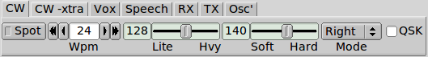
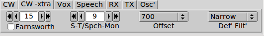
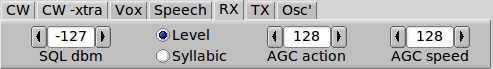
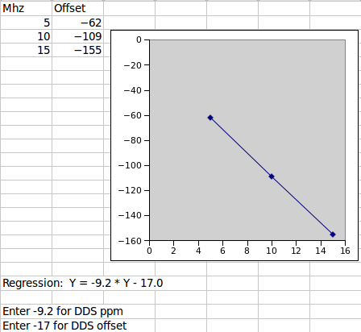

|  |
CW The internal keyer can be enabled for left or right handed operation. It can also be configured for straight key operation. The words/min, weight and attack of the keyed waveform can be set. The Kachina Pegasus is a QSK rig. Select QSK operation by enabled the QSK check box. Press the Spot button to hear an injected tone at the side tone (Offset frequency). Use this for zero beat with a received signal. |
|  |
You can adjust the keyer
sidetone relative to the received audio. Set the control
to zero if you do want to hear the sidetone. The Offset frequency
is the CW bfo pitch. You can elect to use the narrow or wide
filter for CW. |
| VOX You can operate the Kachina with manual SSB ptt or with Vox. The three Vox controls are controlled iaw the Kachina manual. |
|
| SPEECH You can enable the SSB speech level (recommended only with headphones) or monitor the digital audio that is applied to the rear panel auxiliary connector. The compression level is also adjustable and speech compression can be enabled or disabled as suited. Do not use speech processing with digital mode audio. |
|
|  |
RX The squelch control can be used to open the audio based on either level or syllabic action. -127 dbm setting disables the squelch. A sliding button indicator next to the smeter indicator shows the position of the level squelch. AGC action and AGC speed can be adjusted to suit the operating requirements. |
| TX Enable the "Amp on/off" if you want the Kachina to operate with an amplifier that is keyed. Adjust the equilization to accentuate portions of the speech spectrum. Low values increase base, high values increase treble |
|
Advanced multi-frequency analysis

|
Master Oscillator Calibration The signal frequencies internal to the Kachina are all derived from a single oscillator. That oscillator can be corrected for frequency errors. Proceed as follows. Simple single frequency adjustment:
Set fldigi to the frequency analysis mode. Set the waterfall cursor at the CW tone (i.e. 700 Hz). When each reference is adjusted the WF signal should be exactly at the CW tone frequency. This will occur at zero beat. |